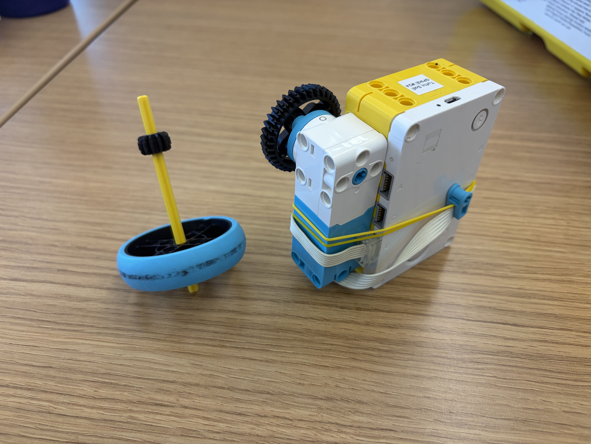

For this project, I explored the design and behavior of a top spinner. I focused on how balance, shape, and motion affect stability and how small changes in the build can influence how the top spins and responds while in motion.